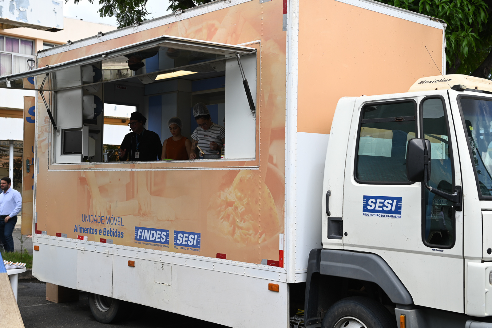

1. Consulta de Turmas
No portal, voce visualiza cursos, modalidade, local, faixa etaria e disponibilidade de vagas.
O QualificaVix é uma iniciativa da Prefeitura Municipal focada em transformar vidas através da educação profissionalizante gratuita, estimulando a empregabilidade local.
Explorar Cursos Disponíveis →O QualificaVix, conhecido no portal como VixCursos, e uma iniciativa da Prefeitura de Vitoria (ES) voltada para ampliar o acesso a qualificacao profissional em diferentes regioes da cidade.
O programa conecta formacao tecnica, cidadania e desenvolvimento economico local. A proposta e aproximar oportunidades de aprendizagem da populacao, com turmas em unidades fixas e tambem em estruturas moveis nos bairros.
Com foco em inclusao produtiva, o VixCursos atende pessoas em busca do primeiro passo profissional, recolocacao no mercado ou aperfeicoamento para empreender.
Uma trilha simples para facilitar seu acesso a qualificacao.
No portal, voce visualiza cursos, modalidade, local, faixa etaria e disponibilidade de vagas.
Com poucos dados, voce registra interesse e escolhe a turma mais adequada ao seu perfil.
A equipe entra em contato quando necessario para orientar os proximos passos e organizacao da turma.
As formacoes acontecem em parceria com instituicoes reconhecidas, com foco em pratica e empregabilidade.
Levamos a qualificação profissional diretamente para o seu bairro.

Infraestrutura de ponta itinerante.

Cozinha industrial completa sobre rodas.
Instituições renomadas garantem o peso do seu certificado.
Preciso pagar para participar?
Os cursos ofertados pelo programa no portal sao gratuitos.
Posso acompanhar novas turmas?
Sim. As oportunidades sao atualizadas periodicamente no site.
Existe atendimento para tirar duvidas?
Sim. Voce pode usar o assistente da pagina e os canais oficiais da Prefeitura para orientacao complementar.